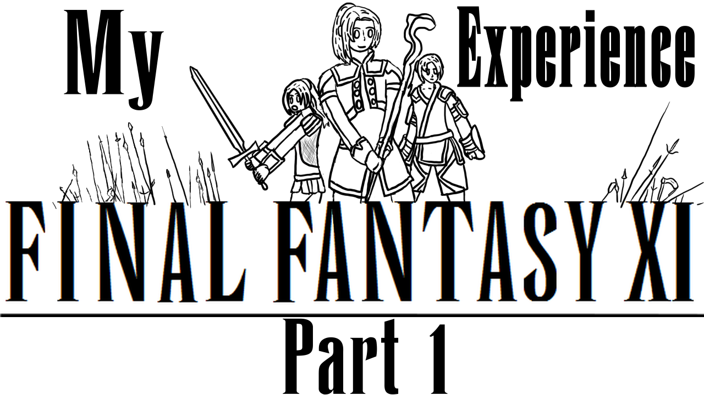

Technically, its art!
I haven't done any 2D art, as I've been spending a lot of my time trying to get this finished first.
Some background info
I've been working on it after Batb 2 finished, in mid November, recording gameplay and script writing. However, I switched gears during the editing process to update my website's look, which was about a month long process of tweaking, and making sure everything it correct.
So around January I worked on the project mostly, as that was my primary focus. Thankfully it went pretty smoothly, only really having to re-record audio once. I learned a lot during that re-recording, the reason I did it was because the script needed a lot more work, and I was only able to see the issues after I heard myself.
My friend helped with looking over the script, but because he was busy with other stuff, I ended up finishing the video without him looking through all of it. Overall, I'm happy with the video, and I had lots of people looking through the video for advice as well.
Because of the video/11, I was able to meet Daetea, a good friend of mine now. She's an artist as well, so feel free to check her out.
I didn't edit the second video as much as I wanted to at first, as the 14 cross over with 11 subs is going on, and I felt like this would more or less be the best time to upload the video, so I made the thumbnail rather quickly to match the timing.
It was somewhat hard to figure out how to make the thumbnail, and I spent a lot of time trying to figure out what I wanted, but I wanted to try and keep it close to the original logo, while still making it more personalized. Not sure if I like it, but it's serviceable.
Otherwise, There's not too much more to say about the video itself, except, I hope you enjoyed it. If you haven't seen it here, then check it out here.